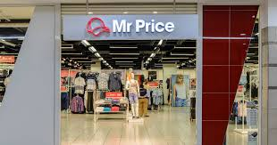
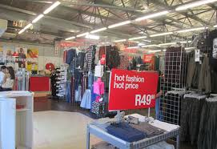

MR PRICE
Mr Price Group Limited is a publicly traded retail company based in South Africa. Founded in 1985, Mr Price opened in 1987 after the owners bought a controlling interest in John Orrs Holdings, whose trading divisions at the time were The Hub and Miladys
GET THESE SUMMER DRESSES FOR LESS
It is a cash-based, omni-channel retailer that sells its own-branded merchandise. It trades predominantly in South Africa as well as through owned and franchise stores across 13 African markets. It targets a wide range of customers and is well known for its fashion-value offering. The group’s trading divisions have evolved over time which has expanded its offering to apparel, cosmetics, homeware and sportswear merchandise through five trading divisions, namely: Mr Price, Miladys, Mr Price Sport, Mr Price Home and Sheet Street. It services its customers through its extensive store network as well as through its online platforms. It also has an established financial services division, Mr Price Money, which focuses on offering credit and insurance products, as well as a fast growing cellular offering.
Established in 2005, the Mr Price Foundation is a Non-Profit Benefit Organisation, whose purpose as a youth development organisation is to unlock potential and empower young South Africans through its education and skills development programmes; Mr Price Foundation Schools and Jump Start!
TRADING HOURS
- Mon: 8:00 - 17:00
- Tue: 8:00 - 17:00
- Wed: 8:00 - 17:00
- Thu: 8:00 - 17:00
- Fri: 8:00 - 17:00
- Sat: 8:00 - 17:00
- Sun: 8:00 - 17:00